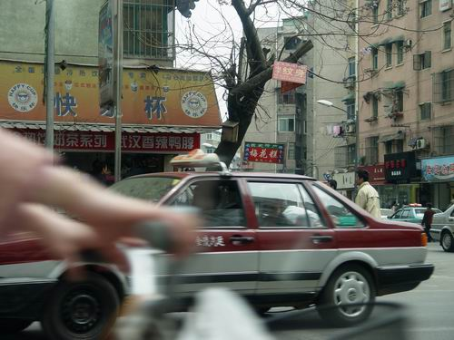
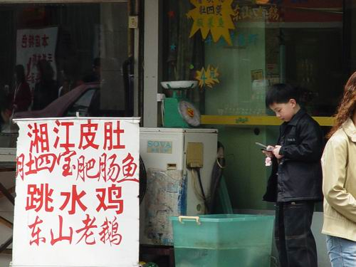
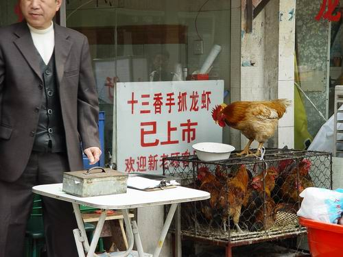

单色叶 @ Apr 08, 2005
工作...究竟是平息不安还是让人更加不安？
看着这个无声世界中的他们，脸上洋溢着心意满足的神情，如若不是真的满足，那一定是演技太好。在上班和下班之间的过程每天都是相同的，发传真时看着相同的风景，打着重复的电话号码听着同样的声音写着相似的数字和时间回复着差不多的E-MAIL…..一切如此平缓行进毫无异常。
沉默如春天的一片单色叶！
工作...究竟是平息不安还是让人更加不安？
看着这个无声世界中的他们，脸上洋溢着心意满足的神情，如若不是真的满足，那一定是演技太好。在上班和下班之间的过程每天都是相同的，发传真时看着相同的风景，打着重复的电话号码听着同样的声音写着相似的数字和时间回复着差不多的E-MAIL…..一切如此平缓行进毫无异常。
沉默如春天的一片单色叶！
背景音乐
Dear Friend.ram-顺子
跟夏天才告别转眼满地落叶
远远的白云依旧无言
像我心里感觉还有增无减
跟去年说再见转眼又是冬天
才一年看着世界变迁
有种沧海桑田无常的感觉
oh~ friend 我对你的想念
此刻特别强烈我们如此遥远
朋友孩子的脸说着生命喜悦
如果说我们依然相恋
说不定在眼前是另外情节
oh~ friend 我对你的想念
此刻特别强烈这么多年
oh~ friend 我对你的想念
此刻特别强烈如此遥远
friend~
中午开车去中山陵兜风，到了水榭附近闻到新鲜植物的芳香，满眼丰富清淡的自然界色彩，似有似无的，让人恍惚置身于水彩画里，非常美的感受。不想走，就想静静的看着。晚饭后坐在餐桌旁把摸这几天未来得及收拾起来的首饰，想拍摄下来，包括今晚买的白玫瑰。
生活是内心最真实的感受，不是照葫芦画瓢的形式所能支撑的。
这世上谁都有秘密，但从某一刻起我不再有任何欲望想知道他人的秘密。好也好坏也好，都是每个人对自己生活的选择，现在我只愿是穿梭于水榭的一阵风，逍遥在江南短暂的春天里！
尤其喜欢这句“我喜欢对着电话唱歌给你听，只要能听见你的声音我就开心”，听到这里的时候有股暖流涌上来，让人感动。酸酸涩涩的恋爱季节已经过去，但仍然怀念恋爱着的感觉。有部日本电视连续剧《好久没恋爱》，要是换成韩国人拍会不会是另外的感受？里面描述三个30多岁女人的故事，很有些同感。只是日本人表述的有点缺乏美感。






疯狂烦躁的下午，时常为上不了局域网而停下手上的工作，这是怎样一个让人心脏出位的网络？
匆匆结束所有琐碎的时间，未必来得及收拾好下班的东西，寥寥数语这就要离开。不得不说周末的感觉很棒，只是这天气一定要配合才好。
明天将披着我那青黄不接的头发前往上海。
—上周末在上海拍摄的照片（冈本、Christina、Angie）

我们有真正快乐的时间，比如一小时两小时一天两天...但是我们无法拥有整个人生如影随形般的快乐。于是，下一段快乐成为人生长途跋涉的起因。我，现在的那点快乐仅是心灵静谧的瞬间。
除了工作、写BLOG、做家务和恋着身边的“思考者”之外我不学无术的呼吸着每日或污浊或清净的空气。我们总是在计划着下一年的生活，计划也在等待中流逝，日本旅行从3月中旬推到五一，现在又要推到遥遥无期。我在等待他的空闲时间。另外还想安排一些有关兴趣方面的学习课程。
昨晚看了一部片子《The Other Side of Heaven》（海啸生死恋），里面讲一个传教士被派到位于太平洋南部汤加群岛的一个仅有几百人的孤岛上传教，虽然电影故事老套，但真正被吸引的是汤加的风土人情和作为传教士艰险传教的过程。据说1867年7月12日卫理工会的传教士托马斯.贝克乘船来到斐济最大岛维提岛。他此行的目的是以基督教教义“感化”当地土著，使他们能够颁依上帝之爱；二是为西方与土著之间的贸易谈判。结果因为贝克自做主张将首领头上的梳子取下来，把自己的帽子戴到了对方头上。这可是当地的大忌！于是愤怒的土著不由分说将贝克乱斧砍死。然后按照对待战俘的方式，在贝克身上涂了油架到火上烤。然后岛民们围坐在一起举行隆重的仪式，将尸体分吃的干干净净。没有哪个地方像斐济，先是被西方人贬成了野蛮的“食人岛”，接着又被西方人褒成了天堂、世外桃源，世界最富有的人与最出名的人都爱往那儿跑。斐济的前世今生，真真是一会儿碧落一会儿黄泉......什么时候我们也去斐济旅行？

现实生活仿佛一幕惨烈的舞台剧。
有的人站在阴暗的光线里卑躬屈膝，手拿利器撕割着明亮灯光下天真从容的面孔。他们就象一群嗅觉灵敏的豺狼随时捕捉视线中的猎物，随时掉转方向。若还想面带笑容你得从心灵到面孔都涂抹些恶毒的色彩，下面的表演才能持续而持久。
谁是这个时代最真实的傻瓜？认真的人！
和他在ABC餐厅吃晚饭遇见一个朋友，坐在一起聊天。
谈谈朋友的朋友，谈谈各自的工作和感情，时间分分秒秒滴滴哒哒的走过，10点多钟的餐厅大约4、5桌人用餐，夜晚静谧的色调，这种氛围令人陶醉。有人说我外表江南内心北方，事实上我也倾向和内心北方的人交往！
我们都在问自己为什么工作？当工作和自己的兴趣爱好不能默契时，就只当是为了8小时外的生活而工作，人没有理由让自己不开心。刚才MSN上Hank说他一大学的哥们儿，不过28岁就去了天堂，得的肌肉滑膜癌，事业愈见红火，买了房子和车，正准备和交往5年的女友结婚......我们都要努力的活着，尽力快乐的活着。

3月21日驾照办下来，只要有机会就开着自家车在繁忙的交通时间段里练习，他一直认为我属于胆大的，拿到驾照的当天便自己开了车，拐进小巷子时出了一身汗。对于新手来讲左右方向感不是很强，需要特别注意。
今天体检，除了血液未出结果其他一切正常。体重比之前的92斤重了8斤。中午我们几个年轻人和经理一起去宁海路那边吃鸡丝汤面，据说是正宗的草鸡汤，面馆附近还有好吃的上海生煎包，一客2元四只，价廉物美。
除了工作之外若还要忙碌别的事情，一定觉得时间不够用，于是大脑也没有空间去想那些空闲时候莫名其妙的烦恼。很多次有人要我发喜糖给大家，这是我私人的事情吧，我愿意为谁花钱也是我个人的事情吧。现在是迎接春天的心情，如果真有那么多精力的话还是多关心自己一些比较好。
在上海时和朋友晚上去泡吧，那间酒吧有一个打斯诺克的台子，客人把自己的名字按照先来后到的顺序写在黑板上，输了就让给后面的人来打，这种方式既娱乐了客人又能结识新朋友，蛮有意思。